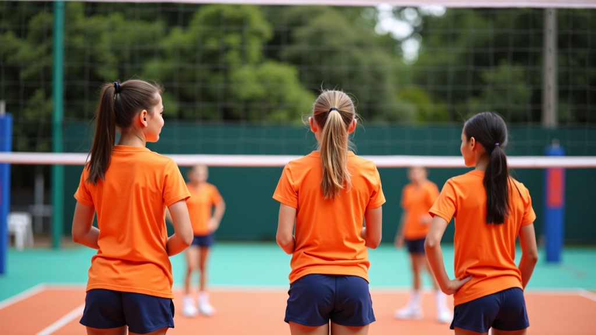
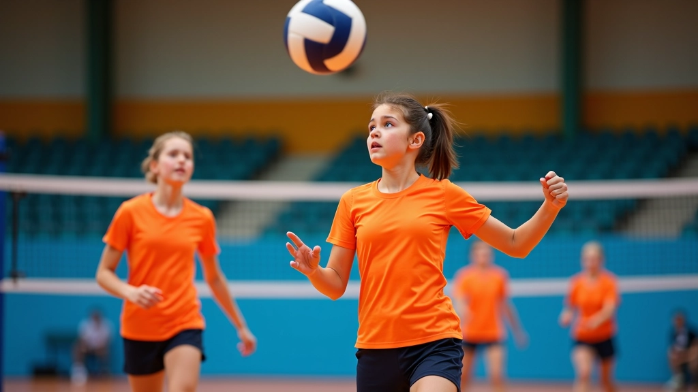
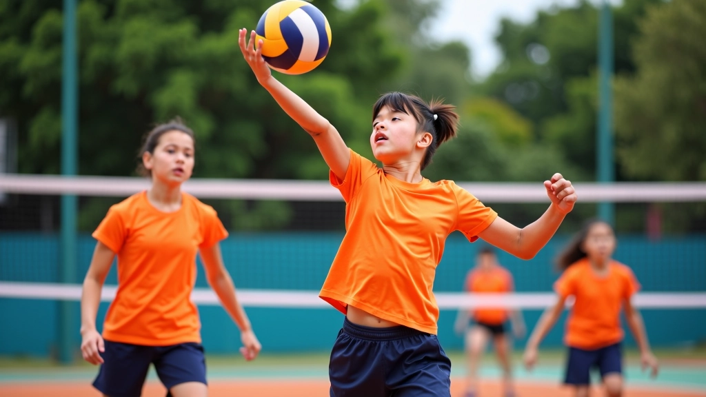
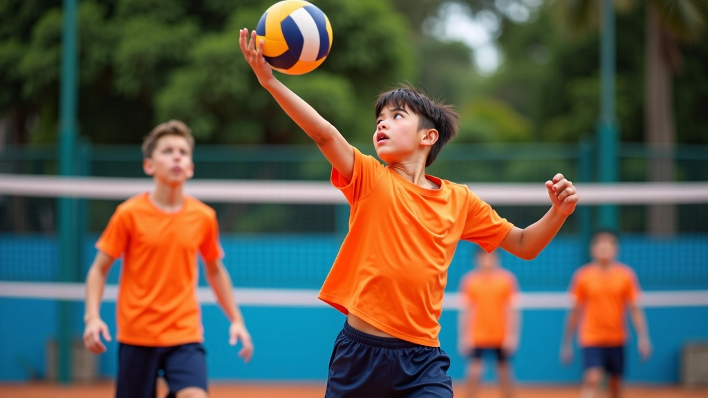

الخطوات الأساسية لإتقان تقنية التمرير
تعلم كيفية تحسين دقة التمرير من خلال تقنيات صحيحة وتدريبات متكررة تناسب جميع مستويات اللاعبين.
تعلم الخطط التكتيكية الأساسية والمتقدمة لتحسين قدرات الفريق على القراءة والاستجابة السريعة أثناء المباريات التنافسية.


الكرة الطائرة ليست مجرد ضربات عشوائية. هناك نظام كامل خلف كل لعبة ناجحة. الفريق الذي يفهم الخطط التكتيكية ويطبقها بسرعة هو الذي يفوز. ستتعلم في هذا الدليل كيفية قراءة اللعب والاستجابة بذكاء للتحركات المعادية.
التكتيك في الكرة الطائرة يعني فهم موقع كل لاعب، توقع حركات الفريق الآخر، واتخاذ القرار الصحيح في الثانية المناسبة. هذا يختلف تماماً عن مجرد تطبيق مهارات فنية جيدة.
كل لاعب في الملعب له دور محدد. الليبيرو يركز على الدفاع والتمرير الدقيق. الضاربون يتحركون بسرعة لإيجاد المسافات الآمنة. الموزع يقرأ دفاع الفريق الآخر ويختار الضارب الأفضل.
في التكتيك الفعال، كل لاعب يعرف بالضبط ماذا يفعل قبل وصول الكرة إليه. لا يوجد وقت للتردد. التدريب المكثف على الأدوار والحركات المحددة هو ما يجعل الفريق متناسقاً.

التشكيلة الدفاعية تحدد كيف سيرد فريقك على الهجوم. التشكيلة الصحيحة تسد الثغرات وتحمي من الضربات الذكية.
التشكيلة 5-1 شائعة جداً — خمسة لاعبين يدافعون عن خط الأساس ولاعب واحد في الوسط. هذا يعطي مرونة عالية. أما التشكيلة 6-2 فتستخدم عندما تريد موزعين احتياطيين في الدفاع. اختيار التشكيلة يعتمد على قوة الفريق الآخر وخبرة فريقك.
التغيير السريع من تشكيلة إلى أخرى يُرك الفريق الآخر في حيرة. لكن هذا يحتاج تدريباً مكثفاً — لا يمكن تغيير التشكيلة بدون أن يعرف كل لاعب مسؤولياته الجديدة تماماً.
أفضل تكتيك هو الذي يستغل نقاط ضعف الفريق الآخر. راقب كيف يتحرك دفاعهم. هل هناك ثغرة على جانب واحد؟ هل الموزع يتأخر في القراءة؟ استخدم هذه الملاحظات لاتخاذ قرارات أفضل في المباراة.
قراءة اللعب تعني فهم ما سيحدث قبل أن يحدث. الموزع الذي يقرأ جيداً يرى أن الدفاع سيترك فراغاً على اليمين — فيوجه الضارب إلى هناك. الليبيرو الذي يقرأ جيداً يتحرك مسبقاً ليكون تحت الكرة عندما تصل.
كيف تطور مهارة القراءة؟ بالمراقبة والتكرار. في التدريب، اطلب من لاعبيك أن يتوقعوا الحركة التالية قبل حدوثها. مع الوقت، تصبح هذه القراءة حدسية — يتحرك اللاعب دون أن يفكر.
الاستجابة السريعة تأتي بعد القراءة الجيدة. عندما يفهم اللاعب ما سيحدث، يمكنه التحرك بسرعة. الفريق الذي يستجيب بسرعة دائماً لديه الأفضلية. أنت تتحكم في اللعب، والفريق الآخر يتفاعل معك.


الهجوم الجيد يحتاج إلى التنوع. إذا كان فريقك يستخدم نفس الهجمة في كل مرة، الدفاع الآخر سيتعلم كيف يوقفها. التنويع يعني استخدام ضاربين مختلفين، مسافات مختلفة، وأوقات مختلفة.
الهجمة السريعة (الـ tempo المنخفض) تُعطي الدفاع وقتاً أقل للرد. الضارب يقفز عالياً والموزع يرمي الكرة عالية جداً — فقط للحظة. هذا يحتاج تنسيقاً مثالياً بين الموزع والضارب. التدريب على هذا النوع من الهجمات يتطلب مئات من التكرارات.
الهجمة البطيئة (الـ tempo العالي) تعطي الضارب وقتاً أكثر للقراءة والاختيار. مفيدة عندما يكون الدفاع قوياً جداً والسرعة وحدها لا تكفي.
التمويه هو فن إخفاء نواياك الحقيقية. الموزع الذي يتحرك بطريقة معينة قبل أن يوجه الكرة — قد يكون يحاول خداع الدفاع. الضارب الذي يبدو أنه سيضرب قوياً ثم يضرب بنعومة — هذا تمويه.
التمويه الفعال يعتمد على التنفيذ السليم. إذا كان التمويه واضحاً جداً، الدفاع سيكتشفه. التمويه الحقيقي يبدو طبيعياً — كأن لاعبك لا ينوي أي شيء خاص. هذا يحتاج ممارسة طويلة حتى يصبح طبيعياً تماماً.
في المباريات المتقدمة، التمويه يصبح عنصراً أساسياً. الفريق الذي يتقن التمويه يحصل على نقاط سهلة. لكن تذكر — التمويه الزائد قد يؤدي إلى أخطاء. يجب أن تكون هناك توازن بين الهجوم المباشر والتمويه.

أنواع التمويه تتضمن الضربة الناعمة (الـ dink)، والتصويب بدل الضربة القوية، والتمرير غير المتوقع. كل واحد منها يحتاج ممارسة منفصلة. في التدريب، خصص وقتاً لتدريب كل نوع حتى يصبح اللاعب قادراً على تنفيذه بثقة في المباراة.
كل ما تعلمته يجب أن يطبق في مباراة حقيقية. المباراة هي المرآة التي تعكس مستوى التدريب. فريق مدرب تكتيكياً جيداً سيظهر براعته من أول مبارة.
ابدأ بتطبيق خطة واحدة بسيطة في كل مباراة. لا تحاول تطبيق كل شيء مرة واحدة. عندما تتقن خطة واحدة، أضف خطة أخرى. التطور التكتيكي يحدث بالتدريج والممارسة المستمرة.
هذا الدليل يقدم معلومات تعليمية عامة عن الاستراتيجيات التكتيكية في الكرة الطائرة. التطبيق الفعلي يختلف من فريق إلى آخر حسب مستوى اللاعبين وخصائص كل فريق. يُنصح باستشارة مدرب متخصص لتطبيق هذه الاستراتيجيات بشكل صحيح وآمن وفقاً لظروف فريقك المحددة.
اطّلع على المزيد من أدلة تطوير مهارات الكرة الطائرة
تعلم كيفية تحسين دقة التمرير من خلال تقنيات صحيحة وتدريبات متكررة تناسب جميع مستويات اللاعبين.

اكتشف الأخطاء الشائعة في الإرسال والطرق الفعالة لتصحيحها وزيادة قوة الإرسال مع الحفاظ على الدقة.

تعرف على أهم التمارين اللياقية والتدريبات الخاصة بلاعبي الكرة الطائرة لتحسين القدرة البدنية والأداء.